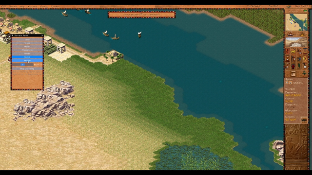

Painting Terrain at Runtime: The Debug Brush

Until now, sculpting the landscape in Akhenaten meant restarting in the scenario editor, making your changes, saving, and loading back in. That round-trip is gone. A new debug panel — contributed by @cwshields in #542 and extended in #551 — lets you paint terrain directly on a live map: drag the mouse to drop trees, carve a river, sprinkle ore-bearing rocks, or smooth a floodplain into the dunes. No editor mode, no reload.
Opening the Panel
Top Menu → Debug → Terrain paint OFF/ON toggles an ImGui window with the full brush
palette. The menu item is wired up from ui_top_menu_widget.js; flipping it sets
game.debug_terrain_paint, which the C++ side picks up and opens the panel.
The Brushes
- Land — clears whatever is there back to plain ground
- Trees — drops scattered tree tiles
- Water — carves rivers and lakes, with automatic deepwater handling
- Floodplain — turns tiles into seasonal flood farmland
- Reeds — marshland for hunting and papyrus
- Rocks — plain stone outcrops
- Orebearing rock — rocks that can host gold/copper/gemstone mines
- Dunes — sand dunes, clustered into multi-tile sprites the same way rocks are
- Meadow — the lush band that grows near water
A slider sets the brush size from 1 to 5 tiles. Selecting a regular building from the sidebar automatically cancels the brush, so you can't accidentally have both armed at once.
It's More Than Just Flipping Bits
The hard part of "live terrain editing" isn't drawing — it's everything that has to settle around the stroke afterwards. Pharaoh's terrain isn't a flat grid of tiles; it's a network of interlocking caches and physical rules that the original editor took for granted because nothing painted into a running scenario. The brush fixes that:
-
Water depth recomputes around the brush. Deepwater must stay at least 2 tiles away
from any shore, otherwise the water sprite picker draws wrong. The brush calls a new
map_water_recompute_depth_regionthat demotes deepwater near a fresh coastline and promotes interior tiles to deep. - Moisture regrows realistically. When water disappears, the grass band around it should shrink. The brush samples the map's original moisture gradient at load time and replays the same plateau-and-taper profile, so painted patches don't end up looking like uniform low-grass wallpaper.
- Floodplain row order rebuilds. The inundation cycle relies on a precomputed list of floodplain tiles in flood-order. Add or remove one with the brush and that list is rederived, shores included, so the painted tiles join (or leave) the seasonal flood.
- Dunes and rocks cluster into multi-tile sprites. Both terrain types come in 1-tile, 2x2, and 3x3 variants. A dedicated re-imaging pass walks the painted region and assigns the right sprite based on neighbouring tiles — partially-erased clusters get re-clustered cleanly.
-
Off-map tiles get projected at load. The ring of scenery outside the playable
diamond used to carry stale
TREE | WATERbits. When the brush touched the border, those bits could bleed inward and flip tiles to grass. Now the off-map ring is normalized on load, so the border stays clean.
Demolishing With the Brush
Painting over an occupied tile demolishes whatever building is there — but it goes through a proper
teardown rather than just clearing tile bits. Houses release their population as homeless figures,
floodplain farms deplete their soil (when soil-depletion is enabled), and multi-tile buildings walk
their prev/next chains so every part is marked deleted in sync. The old brute-force
map_building_tiles_remove(0, …) path was leaving zombies of half-removed structures
behind.
Why This Matters
Three things change with this in place:
- Iteration speed for map makers. Tweaking a hill or extending a river no longer means a full editor round-trip. The dev-mode hot-reload story now extends from UI scripts down to the map itself.
- Reproducing bugs. A lot of terrain-edge cases — flood timing, ore-deposit imaging, deepwater shore math — are easier to repro when you can paint the exact scenario in seconds instead of authoring a whole map.
- A foundation for a real in-game editor. The same physics-aware brush primitives (depth recompute, moisture replay, floodplain rebuild) are what a proper sandbox/editor mode would need underneath it. Today it lives behind a debug panel; tomorrow the engine is ready when we want to surface it to players.
Big thanks to @cwshields for both PRs — the second one came in just hours after the first landed.